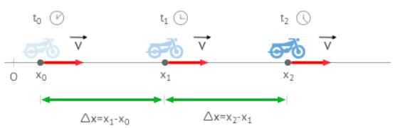

Movieminto rectilineo uniforme
¿Qué es el MRU?

El movimiento rectilíneo uniforme (m.r.u.), es aquel con velocidad constante y cuya trayectoria es una línea recta. Un ejemplo claro son las puertas correderas de un ascensor, generalmente se abren y cierran en línea recta y siempre a la misma velocidad.
El movimiento rectilíneo uniforme (M.R.U.) describe el desplazamiento de un objeto en una sola dirección con una velocidad y tiempo constante en una determinada distancia. En física, el movimiento rectilíneo uniforme puede ser observado dentro de un plano, en un eje de coordenadas, donde el movimiento es en línea recta desplazándose hacia una dirección. Es uniforme porque las variables de velocidad y tiempo en la recta es constante.
Las fórmulas del movimiento rectilíneo uniforme contempla tres incógnitas: Velocidad constante (V), Distancia (d) y Tiempo (t). La fórmula principal teniendo de incógnita la velocidad constante es la siguiente:
Para resolver las fórmulas del movimiento rectilíneo uniforme se debe convertir las unidades al Sistema Internacional (S.I.) siendo las siguientes para cada factor: Velocidad, rapidez, celeridad o módulo: metros por segundo (m/s) Distancia: metros (m) Tiempo: segundos (s)